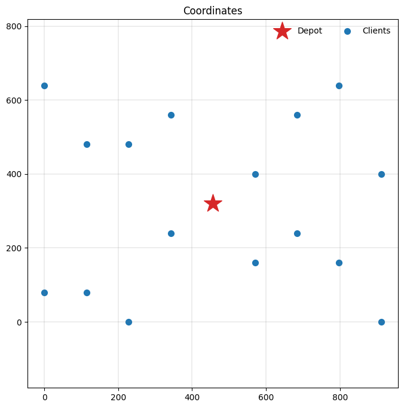
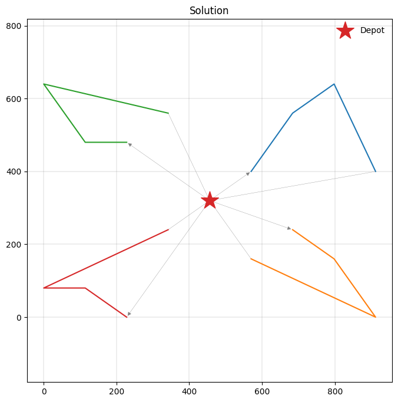
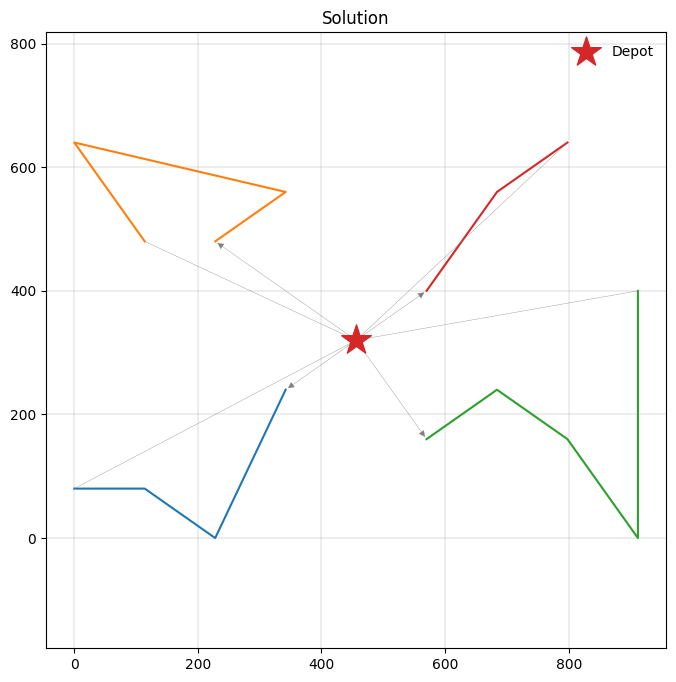
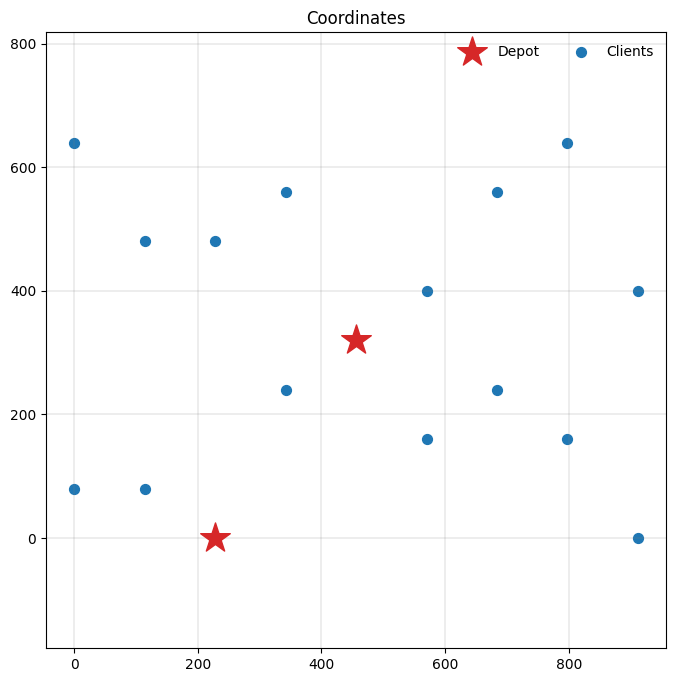
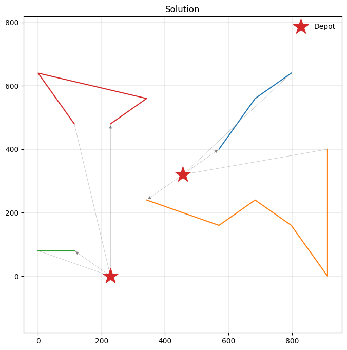
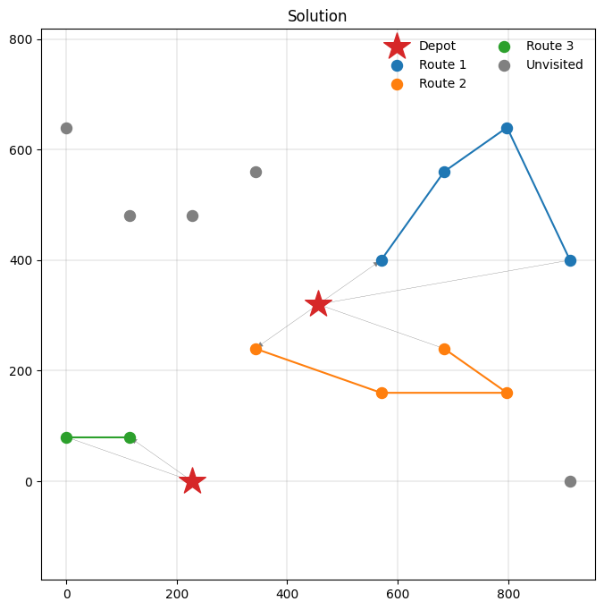
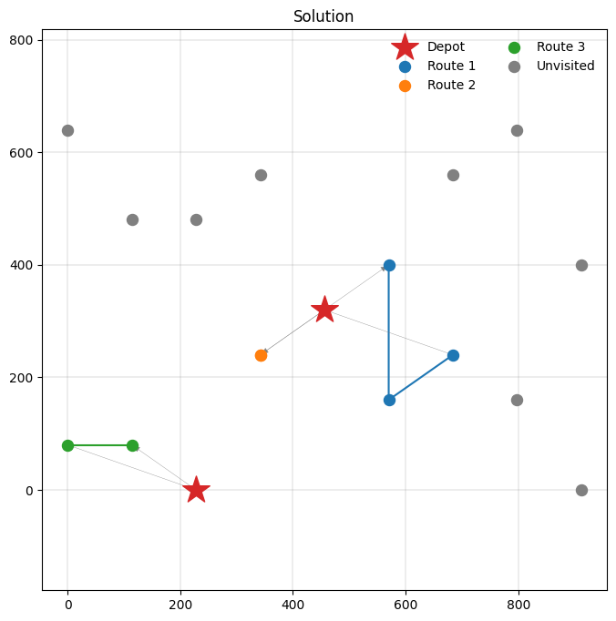
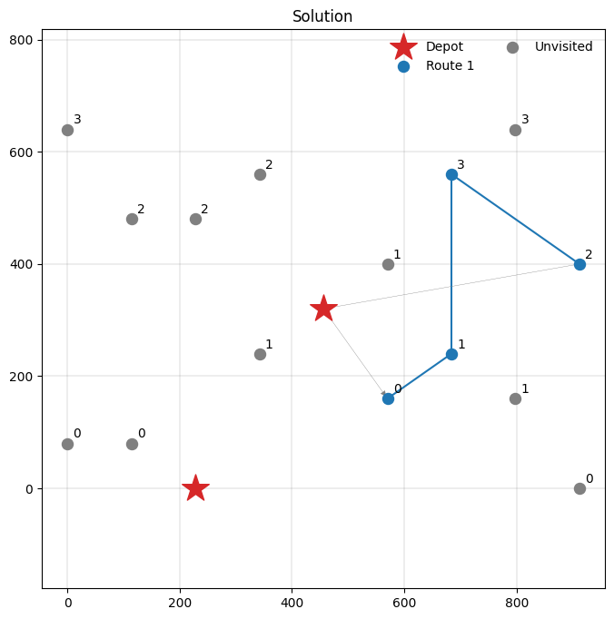
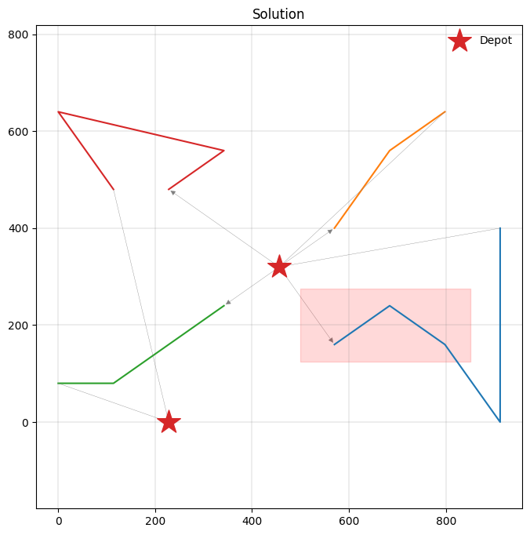
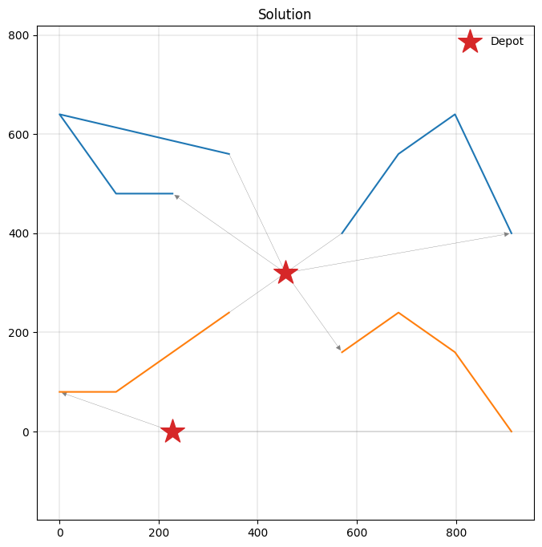

A quick tutorial¶
This notebook provides a brief tutorial to modelling vehicle routing problems with PyVRP, introducing some of its most important modelling features:
We first solve a capacitated VRP, introducing the modelling interface and the most basic components.
We then solve a VRP with time windows, where we introduce the support PyVRP has for problems with duration constraints.
We then solve a multi-depot VRP with time windows and maximum route duration constraints.
We also solve a prize-collecting VRP with optional clients to showcase the modelling optional client visits.
We then solve a VRP with simultaneous pickup and delivery to show problems with deliveries from the depot to clients, and return shipments from clients to depots.
We also show how to model VRPs where exactly one client must be selected from a set of alternatives.
We briefly show how to use routing profiles to model zone restrictions.
Finally, we show how to model a VRP with reloading at various reload depots along the route.
Capacitated VRP¶
We will first model and solve the small capacitated VRP instance with 16 clients defined in the OR-Tools documentation. This instance has an optimal solution of cost 6208. The data are as follows:
[1]:
# fmt: off
COORDS = [
(456, 320), # location 0 - the depot
(228, 0), # location 1
(912, 0), # location 2
(0, 80), # location 3
(114, 80), # location 4
(570, 160), # location 5
(798, 160), # location 6
(342, 240), # location 7
(684, 240), # location 8
(570, 400), # location 9
(912, 400), # location 10
(114, 480), # location 11
(228, 480), # location 12
(342, 560), # location 13
(684, 560), # location 14
(0, 640), # location 15
(798, 640), # location 16
]
DEMANDS = [0, 1, 1, 2, 4, 2, 4, 8, 8, 1, 2, 1, 2, 4, 4, 8, 8]
# fmt: on
We can use the pyvrp.Model interface to conveniently specify our vehicle routing problem using this data. A full description of the Model interface is given in our API documentation.
[2]:
from pyvrp import Model
m = Model()
m.add_vehicle_type(4, capacity=15)
depot = m.add_depot(x=COORDS[0][0], y=COORDS[0][1])
clients = [
m.add_client(x=COORDS[idx][0], y=COORDS[idx][1], delivery=DEMANDS[idx])
for idx in range(1, len(COORDS))
]
for frm in m.locations:
for to in m.locations:
distance = abs(frm.x - to.x) + abs(frm.y - to.y) # Manhattan
m.add_edge(frm, to, distance=distance)
Let’s inspect the resulting data instance.
[3]:
import matplotlib.pyplot as plt
from pyvrp.plotting import plot_coordinates
_, ax = plt.subplots(figsize=(8, 8))
plot_coordinates(m.data(), ax=ax)

The instance looks good, so we are ready to solve it. Let’s do so with a second of runtime, and display the search progress using the display argument on Model.solve.
[4]:
from pyvrp.stop import MaxRuntime
res = m.solve(stop=MaxRuntime(1), display=True) # one second
PyVRP v0.12.0
Solving an instance with:
1 depot
16 clients
4 vehicles (1 vehicle type)
| Feasible | Infeasible
Iters Time | # Avg Best | # Avg Best
Search terminated in 1.00s after 1425 iterations.
Best-found solution has cost 6208.
Solution results
================
# routes: 4
# trips: 4
# clients: 16
objective: 6208
distance: 6208
duration: 0
# iterations: 1425
run-time: 1.00 seconds
By passing the display argument, PyVRP displays statistics about the solver progress and the instance being solved. In particular, it outputs the sizes of the feasible and infeasible solution pools, their average objective values, and the objective of the best solutions in either pool. A heuristic improvement is indicated by a H at the start of a line.
Let’s print the solution we have found to see the routes.
[5]:
print(res)
Solution results
================
# routes: 4
# trips: 4
# clients: 16
objective: 6208
distance: 6208
duration: 0
# iterations: 1425
run-time: 1.00 seconds
Routes
------
Route #1: 9 14 16 10
Route #2: 8 6 2 5
Route #3: 12 11 15 13
Route #4: 1 4 3 7
Good! Our solution attains the same objective value as the optimal solution OR-Tools finds. Let’s inspect our solution more closely.
[6]:
from pyvrp.plotting import plot_solution
_, ax = plt.subplots(figsize=(8, 8))
plot_solution(res.best, m.data(), ax=ax)

We have just solved our first vehicle routing problem using PyVRP!
Warning
PyVRP automatically converts all numeric input values to integers, except for client and depot (x, y) coordinates. If your data has decimal values, you must scale and convert them to integers first to avoid unexpected behaviour.
VRP with time windows¶
Besides the capacitated VRP, PyVRP also supports the VRP with time windows. Let’s see if we can also solve such an instance, again following the OR-Tools documentation. Like in the OR-Tools example, we will ignore capacity restrictions, and give each vehicle a maximum route duration of 30. Unlike the OR-Tools example, we still aim to minimise the total travel distance, not duration.
[7]:
# fmt: off
DURATION_MATRIX = [
[0, 6, 9, 8, 7, 3, 6, 2, 3, 2, 6, 6, 4, 4, 5, 9, 7],
[6, 0, 8, 3, 2, 6, 8, 4, 8, 8, 13, 7, 5, 8, 12, 10, 14],
[9, 8, 0, 11, 10, 6, 3, 9, 5, 8, 4, 15, 14, 13, 9, 18, 9],
[8, 3, 11, 0, 1, 7, 10, 6, 10, 10, 14, 6, 7, 9, 14, 6, 16],
[7, 2, 10, 1, 0, 6, 9, 4, 8, 9, 13, 4, 6, 8, 12, 8, 14],
[3, 6, 6, 7, 6, 0, 2, 3, 2, 2, 7, 9, 7, 7, 6, 12, 8],
[6, 8, 3, 10, 9, 2, 0, 6, 2, 5, 4, 12, 10, 10, 6, 15, 5],
[2, 4, 9, 6, 4, 3, 6, 0, 4, 4, 8, 5, 4, 3, 7, 8, 10],
[3, 8, 5, 10, 8, 2, 2, 4, 0, 3, 4, 9, 8, 7, 3, 13, 6],
[2, 8, 8, 10, 9, 2, 5, 4, 3, 0, 4, 6, 5, 4, 3, 9, 5],
[6, 13, 4, 14, 13, 7, 4, 8, 4, 4, 0, 10, 9, 8, 4, 13, 4],
[6, 7, 15, 6, 4, 9, 12, 5, 9, 6, 10, 0, 1, 3, 7, 3, 10],
[4, 5, 14, 7, 6, 7, 10, 4, 8, 5, 9, 1, 0, 2, 6, 4, 8],
[4, 8, 13, 9, 8, 7, 10, 3, 7, 4, 8, 3, 2, 0, 4, 5, 6],
[5, 12, 9, 14, 12, 6, 6, 7, 3, 3, 4, 7, 6, 4, 0, 9, 2],
[9, 10, 18, 6, 8, 12, 15, 8, 13, 9, 13, 3, 4, 5, 9, 0, 9],
[7, 14, 9, 16, 14, 8, 5, 10, 6, 5, 4, 10, 8, 6, 2, 9, 0],
]
TIME_WINDOWS = [
(0, 999), # location 0 - the depot (modified to be unrestricted)
(7, 12), # location 1
(10, 15), # location 2
(16, 18), # location 3
(10, 13), # location 4
(0, 5), # location 5
(5, 10), # location 6
(0, 4), # location 7
(5, 10), # location 8
(0, 3), # location 9
(10, 16), # location 10
(10, 15), # location 11
(0, 5), # location 12
(5, 10), # location 13
(7, 8), # location 14
(10, 15), # location 15
(11, 15), # location 16
]
# fmt: on
We now need to specify the time windows for all locations, and the duration of travelling along each edge. The depot’s time window is also applied to the vehicle type, to indicate shift time windows.
[8]:
m = Model()
m.add_vehicle_type(
4,
shift_duration=30,
tw_early=TIME_WINDOWS[0][0],
tw_late=TIME_WINDOWS[0][1],
)
depot = m.add_depot(
x=COORDS[0][0],
y=COORDS[0][1],
tw_early=TIME_WINDOWS[0][0],
tw_late=TIME_WINDOWS[0][1],
)
clients = [
m.add_client(
x=COORDS[idx][0],
y=COORDS[idx][1],
tw_early=TIME_WINDOWS[idx][0],
tw_late=TIME_WINDOWS[idx][1],
)
for idx in range(1, len(COORDS))
]
for frm_idx, frm in enumerate(m.locations):
for to_idx, to in enumerate(m.locations):
distance = abs(frm.x - to.x) + abs(frm.y - to.y) # Manhattan
duration = DURATION_MATRIX[frm_idx][to_idx]
m.add_edge(frm, to, distance=distance, duration=duration)
[9]:
res = m.solve(stop=MaxRuntime(1), display=False) # one second
print(res)
Solution results
================
# routes: 4
# trips: 4
# clients: 16
objective: 6528
distance: 6528
duration: 79
# iterations: 1001
run-time: 1.00 seconds
Routes
------
Route #1: 7 1 4 3
Route #2: 12 13 15 11
Route #3: 5 8 6 2 10
Route #4: 9 14 16
Due to the hard time windows requirements, the total travel distance has increased slightly compared to our solution for the capacitated VRP. Let’s have a look at the new solution.
[10]:
_, ax = plt.subplots(figsize=(8, 8))
plot_solution(res.best, m.data(), ax=ax)

Multi-depot VRP with time windows¶
Let’s now solve a VRP with multiple depots and time windows. We consider two depots, and two vehicles per depot that have to start and end their routes at their respective depot. PyVRP additionally supports vehicles ending their routes at a different depot from where they start, by passing different depots to the start_depot and end_depot arguments of the VehicleType.
We will re-use some of the data from the VRPTW case, but change the time window data slightly: the first client now becomes the second depot. Note that in the case of multiple depots, the distinction between vehicle shifts and depot opening times becomes particularly important.
[11]:
# fmt: off
TIME_WINDOWS = [
(0, 999), # location 0 - a depot (modified to be unrestricted)
(0, 999), # location 1 - a depot (modified to be unrestricted)
(10, 15), # location 2
(16, 18), # location 3
(10, 13), # location 4
(0, 5), # location 5
(5, 10), # location 6
(0, 4), # location 7
(5, 10), # location 8
(0, 3), # location 9
(10, 16), # location 10
(10, 15), # location 11
(0, 5), # location 12
(5, 10), # location 13
(7, 8), # location 14
(10, 15), # location 15
(11, 15), # location 16
]
# fmt: on
[12]:
m = Model()
for idx in range(2):
depot = m.add_depot(x=COORDS[idx][0], y=COORDS[idx][1])
# Two vehicles at each depot, with 30 maximum duration.
m.add_vehicle_type(
2,
start_depot=depot,
end_depot=depot,
shift_duration=30,
tw_early=TIME_WINDOWS[idx][0],
tw_late=TIME_WINDOWS[idx][1],
)
for idx in range(2, len(COORDS)):
m.add_client(
x=COORDS[idx][0],
y=COORDS[idx][1],
tw_early=TIME_WINDOWS[idx][0],
tw_late=TIME_WINDOWS[idx][1],
)
for frm_idx, frm in enumerate(m.locations):
for to_idx, to in enumerate(m.locations):
distance = abs(frm.x - to.x) + abs(frm.y - to.y) # Manhattan
duration = DURATION_MATRIX[frm_idx][to_idx]
m.add_edge(frm, to, distance=distance, duration=duration)
Let’s have a look at the modified data instance to familiarise ourself with the changes.
[13]:
_, ax = plt.subplots(figsize=(8, 8))
plot_coordinates(m.data(), ax=ax)

Let’s solve the instance.
[14]:
res = m.solve(stop=MaxRuntime(1), display=False) # one second
print(res)
Solution results
================
# routes: 4
# trips: 4
# clients: 15
objective: 6004
distance: 6004
duration: 69
# iterations: 1143
run-time: 1.00 seconds
Routes
------
Route #1: 9 14 16
Route #2: 7 5 8 6 2 10
Route #3: 4 3
Route #4: 12 13 15 11
[15]:
_, ax = plt.subplots(figsize=(8, 8))
plot_solution(res.best, m.data(), ax=ax)

Prize-collecting VRP¶
We now have a basic familiarity with PyVRP’s Model interface, but have not seen some of its additional features yet. In this short section we will discuss optional clients, which offer a reward (a prize) when they are visited, but are not required for feasibility. This VRP variant is often called a prize-collecting VRP, and PyVRP supports this out-of-the-box.
Let’s stick to the multiple depot setting, and also define a PRIZES list that provides the prizes of visiting each client.
[16]:
# fmt: off
PRIZES = [
0, # location 0 - a depot
0, # location 1 - a depot
334, # location 2
413, # location 3
295, # location 4
471, # location 5
399, # location 6
484, # location 7
369, # location 8
410, # location 9
471, # location 10
382, # location 11
347, # location 12
380, # location 13
409, # location 14
302, # location 15
411, # location 16
]
# fmt: on
When modelling optional clients, it is important to provide both a reward (the prize argument to add_client), and to mark the client as optional by passing required=False:
[17]:
m = Model()
for idx in range(2):
depot = m.add_depot(x=COORDS[idx][0], y=COORDS[idx][1])
m.add_vehicle_type(
2,
start_depot=depot,
end_depot=depot,
tw_early=TIME_WINDOWS[idx][0],
tw_late=TIME_WINDOWS[idx][1],
)
for idx in range(2, len(COORDS)):
m.add_client(
x=COORDS[idx][0],
y=COORDS[idx][1],
tw_early=TIME_WINDOWS[idx][0],
tw_late=TIME_WINDOWS[idx][1],
prize=PRIZES[idx],
required=False,
)
for frm_idx, frm in enumerate(m.locations):
for to_idx, to in enumerate(m.locations):
distance = abs(frm.x - to.x) + abs(frm.y - to.y) # Manhattan
duration = DURATION_MATRIX[frm_idx][to_idx]
m.add_edge(frm, to, distance=distance, duration=duration)
[18]:
res = m.solve(stop=MaxRuntime(1), display=False) # one second
print(res)
Solution results
================
# routes: 3
# trips: 3
# clients: 10
objective: 5145
distance: 3400
duration: 40
# iterations: 1396
run-time: 1.00 seconds
Routes
------
Route #1: 9 14 16 10
Route #2: 7 5 6 8
Route #3: 4 3
[19]:
_, ax = plt.subplots(figsize=(8, 8))
plot_solution(res.best, m.data(), plot_clients=True, ax=ax)

Some clients are not visited in the figure above. These clients are too far from other locations for their prizes to be worth the additional travel cost of visiting. Thus, PyVRP’s solver opts not to visit such optional clients.
VRP with simultaneous pickup and delivery¶
We will now consider the VRP with simultaneous pickup and delivery. In this problem variant, clients request items from the depot, and also produce return shipments that needs to be delivered back to the depot after visiting the client. Thus, there are both deliveries from the depot to the clients, and pickups from the clients to the depot.
Let’s remain in the multi-depot, prize-collecting world we entered through the last example. We first define a LOADS list that tracks the delivery and pickup amount for each location:
[20]:
# fmt: off
LOADS = [
(0, 0), # location 0 - a depot
(0, 0), # location 1 - a depot
(1, 4), # location 2 - simultaneous pickup and delivery
(2, 0), # location 3 - pure delivery
(0, 5), # location 4 - pure pickup
(6, 3), # location 5 - simultaneous pickup and delivery
(4, 7), # location 6 - simultaneous pickup and delivery
(11, 0), # location 7 - pure delivery
(3, 0), # location 8 - pure delivery
(0, 5), # location 9 - pure pickup
(6, 4), # location 10 - simultaneous pickup and delivery
(1, 4), # location 11 - simultaneous pickup and delivery
(0, 3), # location 12 - pure pickup
(6, 0), # location 13 - pure delivery
(3, 2), # location 14 - simultaneous pickup and delivery
(4, 3), # location 15 - simultaneous pickup and delivery
(0, 6), # location 16 - pure pickup
]
# fmt: on
[21]:
m = Model()
for idx in range(2):
depot = m.add_depot(x=COORDS[idx][0], y=COORDS[idx][1])
m.add_vehicle_type(
2,
start_depot=depot,
end_depot=depot,
capacity=15,
tw_early=TIME_WINDOWS[idx][0],
tw_late=TIME_WINDOWS[idx][1],
)
for idx in range(2, len(COORDS)):
m.add_client(
x=COORDS[idx][0],
y=COORDS[idx][1],
tw_early=TIME_WINDOWS[idx][0],
tw_late=TIME_WINDOWS[idx][1],
delivery=LOADS[idx][0],
pickup=LOADS[idx][1],
prize=PRIZES[idx],
required=False,
)
for frm_idx, frm in enumerate(m.locations):
for to_idx, to in enumerate(m.locations):
distance = abs(frm.x - to.x) + abs(frm.y - to.y) # Manhattan
duration = DURATION_MATRIX[frm_idx][to_idx]
m.add_edge(frm, to, distance=distance, duration=duration)
[22]:
res = m.solve(stop=MaxRuntime(1), display=False) # one second
print(res)
Solution results
================
# routes: 3
# trips: 3
# clients: 6
objective: 5375
distance: 1940
duration: 21
# iterations: 1365
run-time: 1.00 seconds
Routes
------
Route #1: 9 5 8
Route #2: 7
Route #3: 4 3
[23]:
_, ax = plt.subplots(figsize=(8, 8))
plot_solution(res.best, m.data(), plot_clients=True, ax=ax)

VRP with alternative clients¶
We continue with a VRP variant that involves selecting a client from a set of alternatives. This situation arises in applications where deliveries can be dropped off at different locations (e.g., pickup points) or when clients request multiple, disjunctive time windows (e.g., morning or evening delivery). PyVRP’s client groups provide a general way to model such situations. Each client group represents a set of alternative clients, and for each group, exactly one client must be selected.
Let’s demonstrate this with our rolling example, where we introduce four different client groups.
[24]:
# This defines each location's group membership.
GROUPS = [None, None, 0, 0, 0, 0, 1, 1, 1, 1, 2, 2, 2, 2, 3, 3, 3]
[25]:
m = Model()
for idx in range(2):
depot = m.add_depot(x=COORDS[idx][0], y=COORDS[idx][1])
m.add_vehicle_type(
2,
start_depot=depot,
end_depot=depot,
tw_early=TIME_WINDOWS[idx][0],
tw_late=TIME_WINDOWS[idx][1],
)
# Create the client groups. Clients are assigned to their group below.
groups = [m.add_client_group() for _ in range(4)]
for idx in range(2, len(COORDS)):
m.add_client(
x=COORDS[idx][0],
y=COORDS[idx][1],
tw_early=TIME_WINDOWS[idx][0],
tw_late=TIME_WINDOWS[idx][1],
prize=PRIZES[idx],
required=False,
group=groups[GROUPS[idx]], # assign group
)
for frm_idx, frm in enumerate(m.locations):
for to_idx, to in enumerate(m.locations):
distance = abs(frm.x - to.x) + abs(frm.y - to.y) # Manhattan
duration = DURATION_MATRIX[frm_idx][to_idx]
m.add_edge(frm, to, distance=distance, duration=duration)
[26]:
res = m.solve(stop=MaxRuntime(1), display=False) # one second
print(res)
Solution results
================
# routes: 1
# trips: 1
# clients: 4
objective: 5869
distance: 1712
duration: 18
# iterations: 1692
run-time: 1.00 seconds
Routes
------
Route #1: 5 8 14 10
[27]:
_, ax = plt.subplots(figsize=(8, 8))
plot_solution(res.best, m.data(), plot_clients=True, ax=ax)
# Plot each client's group label.
for client in m.clients:
ax.text(client.x + 10, client.y + 10, f"{client.group}")

VRP with zone restrictions¶
We have seen several VRP variants in this notebook already. Let us continue with a variant showing how to model zone restrictions, where some vehicles are not allowed to visit clients located inside a particular area. Such restrictions commonly apply in urban environments with emission zones, where several types of (heavy) trucks may not enter. We will add one regular vehicle type to the model that can enter the restricted zone. Additionally, we will consider a vehicle type that cannot enter the restricted zone, and has to travel from the first to the second depot.
Suppose we have a rectangular zone defined by the following (x, y) coordinates.
[28]:
ZONE = ((500, 125), (850, 275))
def in_zone(client) -> bool:
return (
ZONE[0][0] <= client.x <= ZONE[1][0]
and ZONE[0][1] <= client.y <= ZONE[1][1]
)
We can now set up a Model as follows, using routing profiles to restrict which vehicle types can enter the zone to visit clients there.
[29]:
m = Model()
depot1 = m.add_depot(x=COORDS[0][0], y=COORDS[0][1])
depot2 = m.add_depot(x=COORDS[1][0], y=COORDS[1][1])
regular = m.add_profile(name="regular")
m.add_vehicle_type(
2,
start_depot=depot1,
end_depot=depot1,
tw_early=TIME_WINDOWS[0][0],
tw_late=TIME_WINDOWS[0][1],
profile=regular,
)
restricted = m.add_profile(name="restricted")
m.add_vehicle_type(
2,
start_depot=depot1,
end_depot=depot2,
tw_early=TIME_WINDOWS[1][0],
tw_late=TIME_WINDOWS[1][1],
profile=restricted,
)
for idx in range(2, len(COORDS)):
m.add_client(
x=COORDS[idx][0],
y=COORDS[idx][1],
tw_early=TIME_WINDOWS[idx][0],
tw_late=TIME_WINDOWS[idx][1],
)
for frm_idx, frm in enumerate(m.locations):
for to_idx, to in enumerate(m.locations):
distance = abs(frm.x - to.x) + abs(frm.y - to.y) # Manhattan
duration = DURATION_MATRIX[frm_idx][to_idx]
# Edges without a specific profile assignment are added to all
# profiles, unless a profile-specific edge overrides them.
m.add_edge(frm, to, distance=distance, duration=duration)
if frm_idx != to_idx and in_zone(to):
# Here we specify an edge with a high distance and duration
# for the restricted profile. This ensures vehicles with
# that profile do not travel over this edge.
m.add_edge(
frm,
to,
distance=1_000,
duration=1_000,
profile=restricted,
)
[30]:
res = m.solve(stop=MaxRuntime(1), display=False) # one second
print(res)
Solution results
================
# routes: 4
# trips: 4
# clients: 15
objective: 6072
distance: 6072
duration: 75
# iterations: 1120
run-time: 1.00 seconds
Routes
------
Route #1: 5 8 6 2 10
Route #2: 9 14 16
Route #3: 7 4 3
Route #4: 12 13 15 11
[31]:
_, ax = plt.subplots(figsize=(8, 8))
plot_solution(res.best, m.data(), ax=ax)
# Highlight the restricted zone.
ax.fill_between(
[ZONE[0][0], ZONE[1][0]],
ZONE[0][1],
ZONE[1][1],
color="red",
alpha=0.15,
);

VRP with reloading¶
Sometimes vehicles can execute multiple trips over a time horizon, by reloading at the depot between trips. This effectively mitigates the capacity constraint we have so far seen, because vehicles can instead opt to return to the depot to reload if needed. PyVRP supports a very general form of reloading, with free depot selection. Optionally, the maximum number of reloads per vehicle type may also be restricted. See the FAQ for modelling service or loading durations at the depots. We will solve a small example problem here to showcase some of these features, focusing on reloading, rather than time window support.
[32]:
m = Model()
depot1 = m.add_depot(x=COORDS[0][0], y=COORDS[0][1])
depot2 = m.add_depot(x=COORDS[1][0], y=COORDS[1][1])
m.add_vehicle_type(
2,
capacity=15,
start_depot=depot1,
end_depot=depot1,
reload_depots=[depot1, depot2], # where reloads may take place
max_reloads=2, # maximum number of reload depot visits on a route
)
for idx in range(2, len(COORDS)):
m.add_client(
x=COORDS[idx][0],
y=COORDS[idx][1],
delivery=DEMANDS[idx],
)
for frm in m.locations:
for to in m.locations:
distance = abs(frm.x - to.x) + abs(frm.y - to.y) # Manhattan
m.add_edge(frm, to, distance=distance)
Returns to a reload depot are marked with a | in the result summary, as follows:
[33]:
res = m.solve(stop=MaxRuntime(1), display=False) # one second
print(res)
Solution results
================
# routes: 2
# trips: 4
# clients: 15
objective: 5728
distance: 5728
duration: 0
# iterations: 1222
run-time: 1.00 seconds
Routes
------
Route #1: 10 16 14 9 | 12 11 15 13
Route #2: 5 8 6 2 | 3 4 7
Each route in the solution consists of two trips. Let’s investigate the first route in more detail:
[34]:
route, *_ = res.best.routes()
for idx, trip in enumerate(route.trips()):
start_depot = trip.start_depot()
end_depot = trip.end_depot()
delivery = trip.delivery()[0]
print(f"{idx}: Trip visits clients {trip.visits()}.")
print(f" It starts at depot {start_depot} and ends at {end_depot}.")
print(f" Trip distance is {trip.distance()}, total delivery {delivery}.")
0: Trip visits clients [10, 16, 14, 9].
It starts at depot 0 and ends at 0.
Trip distance is 1552, total delivery 15.
1: Trip visits clients [12, 11, 15, 13].
It starts at depot 0 and ends at 0.
Trip distance is 1552, total delivery 15.
A plot reveals the routing and reloading decisions that PyVRP determined:
[35]:
_, ax = plt.subplots(figsize=(8, 8))
plot_solution(res.best, m.data(), ax=ax)

This concludes the brief tutorial: you now know how to model and solve vehicle routing problems using PyVRP’s Model interface. PyVRP supports several additional VRP variants we have not covered here. Have a look at the VRP introduction and other documentation pages to see how those can be modelled and solved.